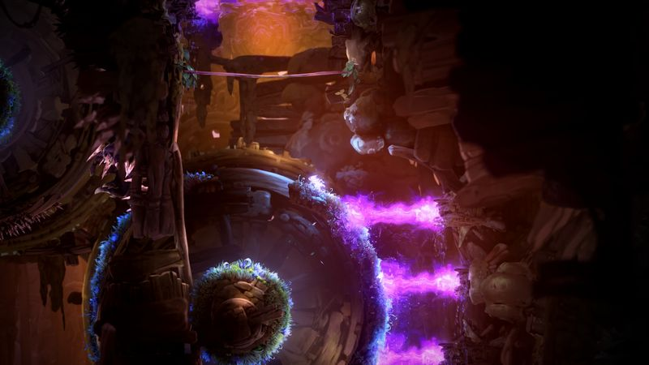
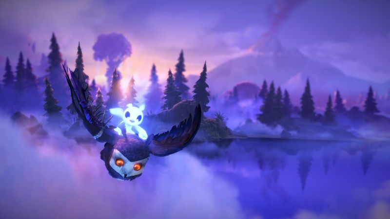

The thirty-second version
Devastating. Beautiful. Absolutely worth it.
The only game where we've had to pause because our eyes were doing something.
Ori and the Will of the Wisps is the kind of platformer that makes you glad your kids left you alone for an hour. It's a genuine metroidvania with a proper combat system this time, some of the best-looking hand-drawn animation in any game, and a handful of chase sequences that will make you feel very old and very fast simultaneously.
Okay, what is this thing?
You are a small white forest spirit called Ori. You are extremely cute. The opening cutscene will cost you something, emotionally. Then the game hands you a jump, a dash, and a sword, and quietly reveals it's a full metroidvania with a big interconnected map and enough abilities to eventually let you traverse three vertical screens in a single flourish.
The combat is the real change from the first Ori. There's a sword, a hammer, a bow, and shard slots that let you tune your build like a light RPG. Boss fights have proper arenas. There are chase sequences that are effectively 3D platformer runs on 2D rails, and they are genuinely thrilling in a way that makes you forget you're a middle-aged man watching a spirit-fox jump.


Why it escaped the group chat
- It's a proper metroidvania with an interconnected map, ability gates and shard-based build variety.
- The soundtrack is orchestral and, at points, does not play fair with your feelings.
- The chase sequences are timed platforming set pieces that are much harder than they look.
Three dads enter
01
Dad Who Skipped the Tutorial
The rare pretty game I finished on purpose.
I usually bounce off platformers by the second wall jump. Not this one. I finished it in a week, in ninety-minute chunks, and I was audibly happy about it. I mostly used the sword. I never learned the hammer. I absolutely nailed one of the chase sequences on the first try and then spent forty attempts on a jump the other two had done blind. That's me.
02
The Descent Guy
The Bash mechanic is genuinely one of the great platformer verbs.
I got weirdly analytical about Bash — the ability to grab a projectile mid-air, freeze time and launch yourself off it. It's a two-axis control puzzle in the middle of a platformer, and once I'd used it as an offensive move against a spike wall I wouldn't shut up about it. I compared it to a certain 1995 shareware classic within twelve minutes. You can guess which.
03
Normal-ish Dad
Long enough to be a game, short enough to finish.
It's about twelve to fifteen hours if you're not chasing every collectible, and you will not chase every collectible. I put an hour in most evenings for a couple of weeks and came out the other side genuinely moved. It's not a game I'll replay, and that's fine. Some games only need one honest go.
Who it is for and what to watch
Invite these people
- Anyone with a fondness for hand-drawn animation and a functioning heart
- Metroidvania fans who missed out on the first Ori
- Dads who want to feel something without booking a therapist
Dad caveats
- The chase sequences are harder than the rest of the game combined
- You will die to spike geometry and blame the camera
- The story will absolutely get you, and there's nothing you can do about it
Receipts
All three of us finished it on PC in one wave over a couple of weeks, mostly in evening sessions once kids were down. Details checked against the game's official Steam listing.